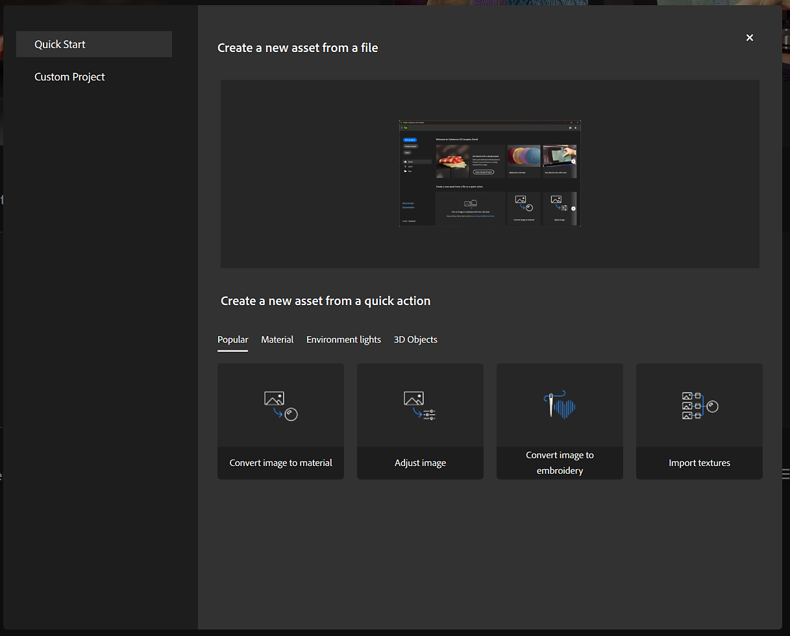
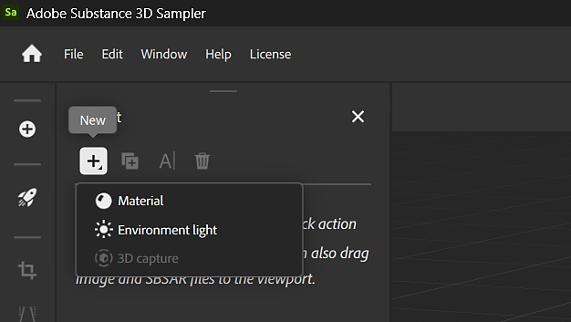

Sampler can use external resources like images and Substance files to modify your project. Use any of the following options to import a file to your project:


Resources are linked and not imported. As a consequence, if a resource file is moved or deleted, materials or content created with that resource will be affected. As a result, we recommend using a dedicated folder for Sampler Assets.
By default, Sampler's included assets are stored under C:\Program Files\Adobe\Adobe Substance 3D Sampler\Resources\assets
| Type | Description |
|---|---|
Bitmaps / Images |
You can drag and drop or import your bitmaps in the Layers panel, or into SBSAR or filter parameters that allow an image input. |
| Substance Packages (SBSAR) |
You can import SBSAR files into the Assets panel or into the Layers panel. |